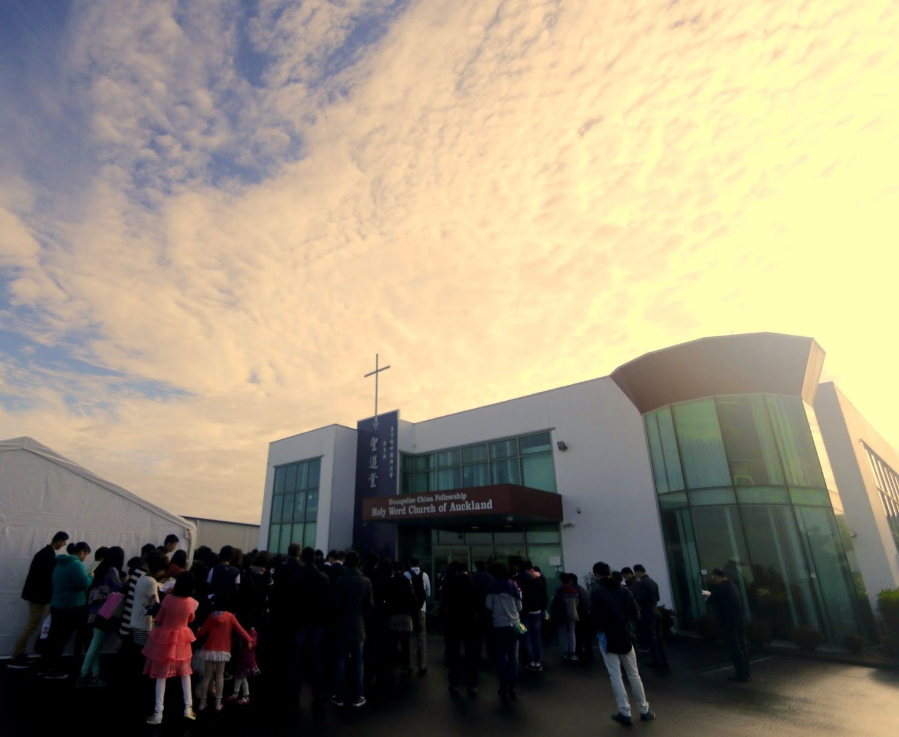

我們的教會
是由蒙召歸信主耶穌基督的人所組成，在地上肩負主所托付之使命，廣傳福音直至地極，並以真道建立信徒，在社會上作光作鹽，彰顯神的慈愛、聖潔及公義。

認識 我們
更加了解我們的信仰
2 Basalt Place, East Tamaki, Auckland
是由蒙召歸信主耶穌基督的人所組成，在地上肩負主所托付之使命，廣傳福音直至地極，並以真道建立信徒，在社會上作光作鹽，彰顯神的慈愛、聖潔及公義。

更加了解我們的信仰
2 Basalt Place, East Tamaki, Auckland